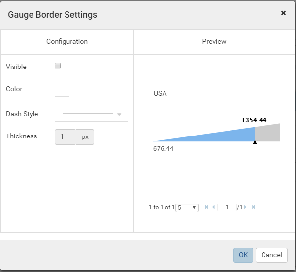

Report Designer/Gauge¶
Gauge is a built-in type of report part that displays data using a speedometer.
Define a Linear Gauge¶
{kind=link}
Fig. 261 Report Designer - Gauge Properties
- Select the chart in Report Body (See Manage Report Parts for how to add a chart).
- Click the expand icon (<) on the right to open the Properties boxes if needed.
- Select the vertical Report Part Properties box.
- The properties are listed in Report Part Properties box in these
sections. (Fig. 261)
- General Info
- Gauge
- Grouping
- View
- Printing
User can configure the properties and see changes reflected in Preview pane:
Select Linear Gauge in Gauge Type drop-down. (See below for Solid Gauge and Simple Gauge.)
- 
Fig. 262 Report Designer - Gauge Border Settings
Configure border settings:
- In Gauge group, click the gear icon (⚙) to open Gauge Border Settings pop-up.
- Choose the border to be visible or not.
- Select a border color.
- Select the border thickness (in pixels).
- Click OK to close the Border Settings pop-up.
Note
The Preview section will not be shown if the Show Preview section in Configuration Mode checkbox is unticked in Others tab in Advanced Settings.

Report Designer - Gauge Border Settings without Preview section
Please see Update Others Settings for more details.
Customize the relative distance between the tick marks (in Intervals box for Linear Gauge only).
Select to use Separator. (See Define Separator)
It looks better to invert the Linear Gauge (to horizontal direction).
-
Configure Data Refresh Interval if needed.
Optionally display a long report in multiple pages.
Optionally choose to print each grid in a new page by checking Page Break After Separator in Printing group.
{kind=link}
{kind=link}
_Group(ShipCity).png)
Fig. 264 Northwind Orders Linear Gauge
To define the above sample gauge:
- Select Northwind Orders table in Data Source.
- Add a gauge report part and select Linear Gauge as the type.
- Add [ShipCity] to Labels (X-axis) box, it will show up as Group(ShipCity).
- Click Add Metrics to create Metrics 1.
- Add [Freight] to Value box, it will show up as Sum(Freight).
- Optionally set the threshold values like following:
_Group(ShipCity)_Threshold.png){kind=link}
Screenshot for Dynamic Threshold to be updated.
Define Separator¶
The Separator option displays multiple sections of gauges according to each unique value of the field(s) defined in Separators box.
For example: this report with multiple gauges, each one for each country in Northwind Orders table.
_Group(ShipCity).png){kind=link}
Fig. 266 Northwind Orders Gauge with ShipCountry Separator
- Tick Use Separator check-box in Grouping in Report Part Properties to see Separators box inside the gauge configuration.
- Add [ShipCity] to Labels (X-axis) box, it will show up as Group(ShipCity).
- Click Add Metrics to create Metrics 1.
- Add [Freight] to Value box, it will show up as Sum(Freight).
- Add [ShipCountry] to Separators box, it will show up as Group(ShipCountry).
Define a Solid Gauge¶
- Select Solid Gauge in Gauge Type drop-down.
- The rest of the properties are similar to Linear Gauge.
An example solid gauge with separator and threshold:
_Group(ShipCity)_Threshold.png){kind=link}
{kind=link}
Sample Simple Gauge.